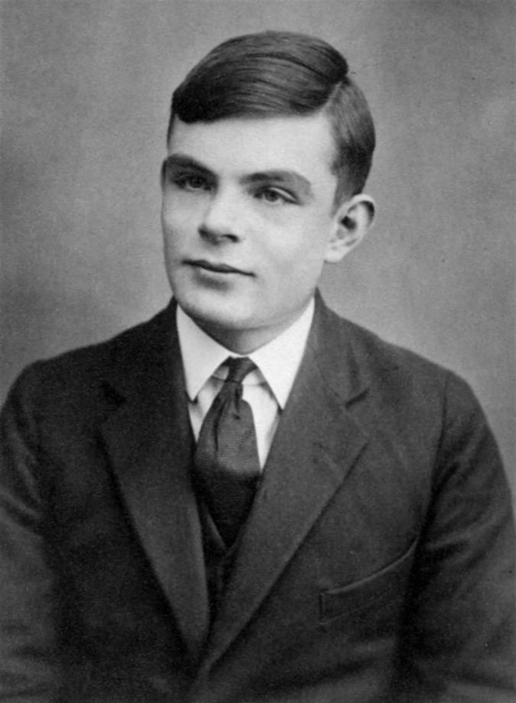
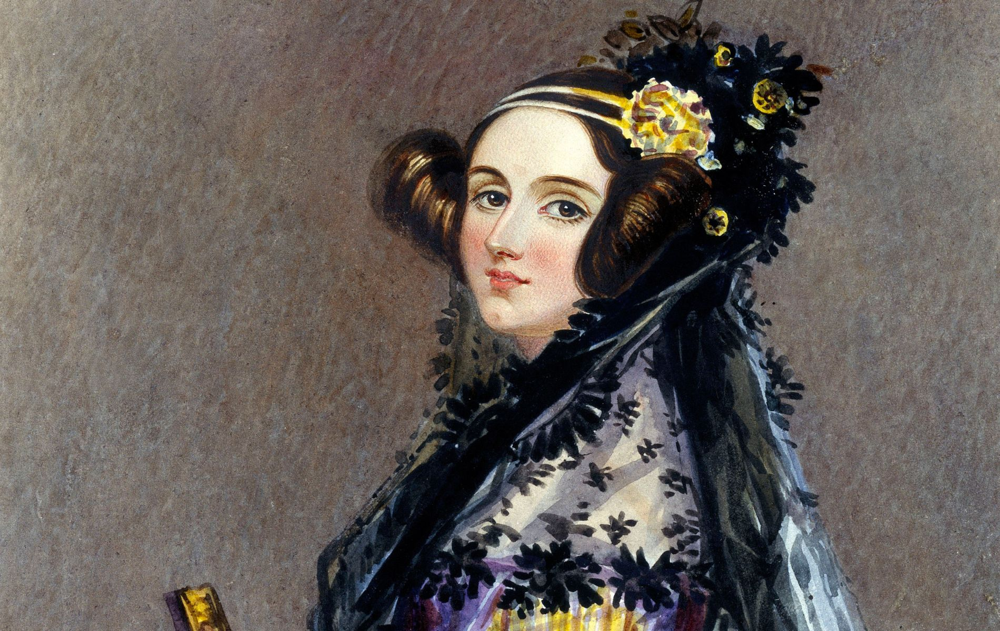

I pionieri dell'informatica
Alan Turing (1912-1954)
Alan Turing è considerato uno dei padri dell'informatica moderna. Durante la Seconda Guerra Mondiale, sviluppò la macchina di Turing, un modello teorico di calcolatore, e contribuì alla decifrazione del codice Enigma, fondamentale per la vittoria degli Alleati.
Ada Lovelace (1815-1852)
Ada Lovelace è riconosciuta come la prima programmatrice della storia grazie ai suoi appunti sulla macchina analitica di Charles Babbage. Fu la prima a intuire che una macchina poteva eseguire calcoli complessi, andando oltre il semplice calcolo numerico.
John von Neumann (1903-1957)

John von Neumann fu un matematico e fisico che contribuì allo sviluppo del modello di architettura del computer oggi noto come "architettura di von Neumann", base di tutti i computer moderni.
Grace Hopper (1906-1992)

Grace Hopper fu una pioniera nella programmazione e sviluppò il primo compilatore per un linguaggio di programmazione. Il suo lavoro fu fondamentale per la diffusione di linguaggi di programmazione di alto livello come COBOL.